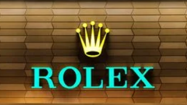
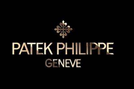
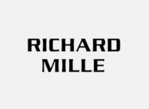
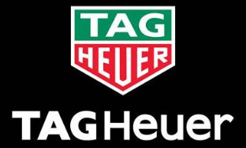

PRODUCTS
Rolex
The founder of Rolex was Hans Wilsdorf in 1905 when he was 24 years old, and it all started when he created a company in London of watch distributions but he dreamed of being able to wear a watch on the wrist although at that time they were still not very effective but he was convinced that they could become possible and could be very elegant and reliable. And that was when he began to develop the brand, the first thing Hans had to think about was the name that took him quite some time because he wanted a short and precise name, he tried 100 different names matching the letters of the alphabet, but none convinced him until one day while he was on the London subway a man said to his ear ROLEX and hence the birth of the name Rolex in 1908. It was 1919 when Rolex moved to Geneva, the city par excellence for its watchmaking and that was when the Rolex brand was registered in Geneva in 1920.
Patek Philippe
The famous role brand Patek Philippe began when Antoni Patek moved to Geneva in 1833, he decided to start undertaking what was his passion watches. In 1839 he started making pocket watches together with his Polish colleague Franciszek Czapek who separated in 1844 and in 1845 Patek wanted to continue doing what he liked the most so he joined a French watchmaker named Adrien Philippe, who was the one who invented the keyless winding mechanism. Soon it was concluded that Patek, a businessman, and Philippe, an extraordinary watchmaker, were the perfect duo so they decided to create on January 1, 1851 the company that would be called Patek Philippe & Cie.
Jacob&Co
The history of this brand is quite interesting because the founder of the brand Jacob & Co called Jacob Arabo founded the company more than 30 years ago in New York after many years of designing watches for private clients and get an excellent reputation in the world of watchmaking deicidio open a store in New York in 2004, It all started when Jacob's father gave him a watch at the age of 13 that showed the time in two time zones and had a map of the world with a gold plated dial and two mechanical movements, that's when he became more interested in watches starting to disassemble them and learn how a watch looked like inside that increased his interest in the world of watches, Because even the simplest watch can be the most complex inside. His biggest dream was to make his own watch, and when he grew up he founded the company Jacob & CO company, all the pieces made by this company are very exclusive and very different from what you can imagine for example the Astronomy watch is inspired by the watch that his father gave him only that instead of having two mechanisms has 5 the same thing happened with the Bugatti Chiron watch this company is not dedicated to making normal watches but is dedicated to making them extravagant and interesting.
Richard Mille
Richard Mille left his position as general manager of the watchmaking section of Place Vendôme jewelry. In 1998 he decided to launch his own watch brand with Dominique Guenat after becoming partners and having the same passion for mechanical aeronautics and automobiles, they decided to launch their plans for the new brand. In 1999 they launched the brand and during the first two years they defined the concept of the brand which were automobiles and aeronautics, after that time of adaptation they decided to launch the watches that have been a great success globally, and with that idea of watches they founded Horométrie SA which is the partner company of Richard Mille as equal partners for the registration of Swiss wholesale trade of watches and jewelry. has many sponsorships with companies and people of very high level such as in the world of sports with Rafael nadal, Bubba Watson, Didier drogba.... in the automotive world has contracts with Fernando Alonso, Ferrari, McLaren automotive have even an own team called Richard Mille Racing team.... In the world of airplanes he is also with Airbus Corporate Jets and many more very famous people from all fields.
Tag Heuer
Eduard Heuer founded in 1860 The Heuer WAtch Company which had all its workshops located in Switzerland and this is how Edward began to develop high quality timekeeping. In 1887 Edward patented one of the most important inventions which was the oscillating pinion. A few decades later Charles Eduard Heuer designed a watch that could signal the tides, in 1959 the Tag Heuer company moved to the United States and Jake Heuer was appointed head of the American branch of the company Heuer in 1962 his father gave him the news that his uncle wanted to sell the company, then Jack deicidio buy the shares of the company of his uncle but with those who gave him his father would be proclaimed the majority shareholder and head of the Heuer Watch Company. In 199 the TAG group sold TAgHeuer to LMVJ for 740 million dollars and made fashionable the old watches that were used in Formula 1 races like the Autavi and the Carrera.